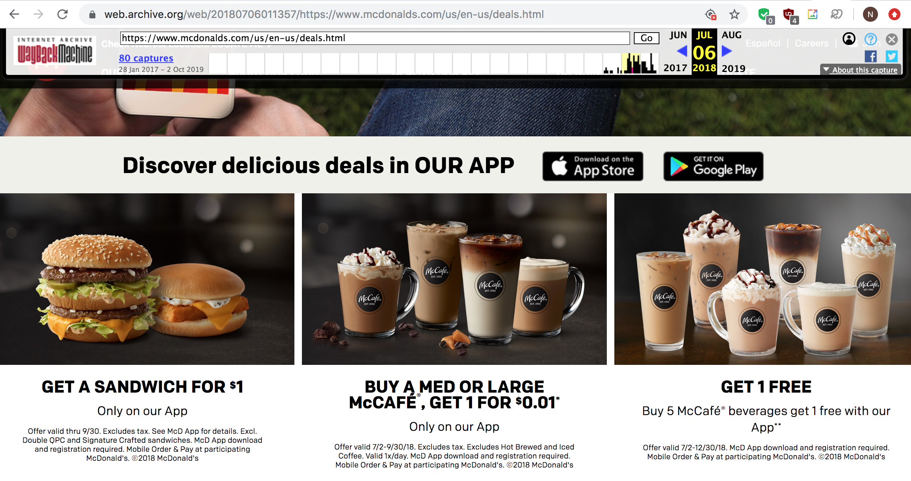
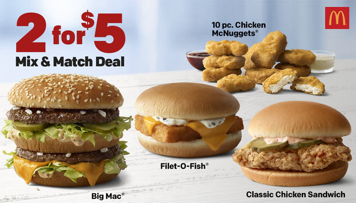
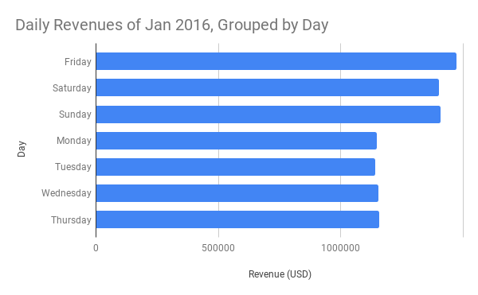

Figure A
Figure A groups three months into a quarter and includes data from January 2016 to
September 2019. This chart shows our company's revenue was steadily increasing and peaking
at Q3 2018 and then it experienced a steep decrease in Q4 2018. Since then, our company has been slowly recovering.
Figure B
To investigate the sudden steep decrease in revenue in Q4 2018, I wanted to focus on our
revenues in 2018. Figure B confirms that our company's lowest point of 2018 is October, which
also happens to be the same month Burger King released their Impossible Burger.
Figure C
Figure C, like Figure B is also a chart of the company's monthly revenue in 2018. However, Figure C
also shows the distribution of how much sales of each menu item make up of each month's revenue.
This chart shows that hamburgers are the most popular item by far. It also shows that while sales of all three
items went down on October 2018, hamburger sales, suffered the most with a decrease of 1 million sales. No other decrease
in sales in 2018 has ever reached 1 million.
Figure D
Figure D is similar to Figure C but it only shows the company's montly revenue from July 2018 to December 2018 and
the data is grouped by region. The chart shows us that NE contains the most of our sales. Besides that, this chart also shows
that all region's sales have decreased by a similar range, meaning that our revenue decrease in October is not dependant on
region.
Analysis
I believe that Burger King's Impossible Burger really did affect our sales since our sales have tanked in the same month
the impossible burger came out. Since our hamburgers lost the most sales out of our other menu items, I believe that many of our hamburger
customers have flocked to the Impossible Burger, which Burger King claims to taste like real beef.
Solution
I believe that the a possible to solution to increasing our sales is to offer more deals or offer weekend exclusive deals. As shown in
Figure A, our revenues were at their highest during the third quarter of 2018.
I was curious as to why our sales were so high for those three months and found that our company offered a lot of
promotions and savings for our customers during that time period.

The image above is a picture of our website in July 2018. The website shows a promotion where customers can buy
our sandwhich menu items for only $1. This deal went from July 2018 to the end of September 2018.

August 2018 was when our company introduced our "2 for 5" deal where customers can get two of our menu items for just $5.
Combined with the ongoing deal from July, it makes sense why our revenue from August was the highest in the third quarter of 2018 and the
ongoing deal shows why all three months did well and why our revenues were so high in the third quarter of 2018.
Figure E

I looked into the provided daily sales data of January 2016 and as shown in Figure E, our sales show
significant increase during the weekend compared to weekdays, and that Friday has the most sales.
From this, one can see that more people are willing to go buy our products during the weekend.
Conclusion
To conclude, the data supports the claim that the release of Burger King's Impossible Burger has decreased our sales
especially the sales of our hamburgers. Since our revenues peaked in the third quarter of 2018 because of the promotions that
were offered during that time, our sales will increase by offering more deals for customers or at least offer weekend exclusive deals
because more people buy our products during the weekend.